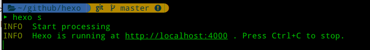
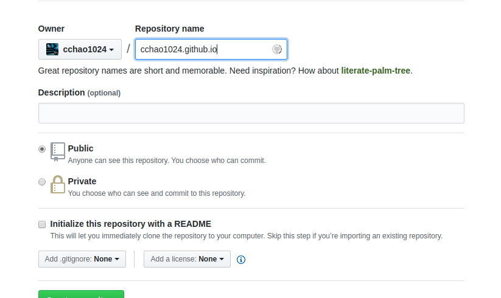

安装 Hexo
Hexo 是一个快速、简洁且高效的博客框架。Hexo 使用 Markdown（或其他渲染引擎）解析文章，在几秒内，即可利用靓丽的主题生成静态网页。
Hexo 的安装需要依赖于
下载安装依赖后，执行命令1
$ sudo npm install -g hexo-cli
通过 hexo -v 可以查看当前系统环境的依赖版本。
创建博客网站
在指定文件夹（博客环境位置）执行命令，即可完成博客环境的初始化1
2
3$ hexo init <folder>
$ cd <folder>
$ npm install
完成后的目录结构1
2
3
4
5
6
7
8.
├── _config.yml
├── package.json
├── scaffolds
├── source
| ├── _drafts
| └── _posts
└── themes
可以通过修改_config.yml 完成博客网站的配置（如： 标题，作者，语言等）。
创建配置博客网站
在指定文件夹（博客环境位置）执行命令，即可完成博客环境的初始化1
2
3$ hexo init <folder>
$ cd <folder>
$ npm install
完成后的目录结构1
2
3
4
5
6
7
8.
├── _config.yml
├── package.json
├── scaffolds
├── source
| ├── _drafts
| └── _posts
└── themes
可以通过修改_config.yml 完成博客网站的配置（如： 标题，作者，语言等）。
创建文章，本地部署
输入 hexo new post “article title” 新建一篇文章
（在 source/_posts 可以看到该MD 文章文件）
将图片放在image目录下可以对其进行相对路径引用
通过 hexo g 生成静态网页
执行 hexo s 即可完成博客内容的本地部署

访问 http://localhost:4000 就能看到效果了。
关联 Github
- 登录Github帐号，新建仓库，名为 <用户名>.github.io 固定写法。

安装部署拓展
1
npm install hexo-deployer-git --save
建立关联
修改配置文件 _config.yml 的 deploy1
2
3
4deploy:
type: git
repository: https://github.com/<用户名>/<用户名>.github.io.git
branch: master保存 github 账号信息到终端，两种方式：
- ssh 本地生成非对称秘钥，将公钥放在github
- 保存账号密码到终端
- 部署修改
通过 hexo d -g 部署本地的博客文件到github